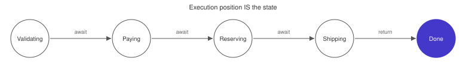

Code-as-State (Implicit State Machine)
Use the workflow’s execution position as implicit state representation, eliminating explicit state variables, transition tables, and developer-managed persistence.
Intent. A process follows a sequence of steps where each step depends on the previous one’s outcome. Rather than modeling it as an explicit state machine with named states, transitions, and a persistence layer, you express it as sequential code. Each activity invocation creates a durable checkpoint. The workflow runtime persists execution position automatically.
Motivation. Consider order fulfillment: validate the order, charge payment, reserve inventory, ship the package, send a confirmation email. Each step must complete before the next begins. If the process crashes after payment but before shipping, it must resume from exactly that point — not restart from the beginning, and certainly not re-charge the customer.
The natural way to model this in a traditional architecture is as an explicit
finite state machine. You define an enum — PENDING, VALIDATED, PAID,
RESERVED, SHIPPED, CONFIRMED — and store the current state in a database
row. A worker polls for orders in each state, performs the next action, and
updates the state column. If the worker crashes, another instance picks up
the order in whatever state it was left in.
This works, but the cost scales with complexity. Every new edge case — a payment that needs manual review, an item that’s out of stock after reservation, a shipping provider that returns an ambiguous status — requires a new state and new transitions. The FSM definition grows. The gap between the state machine description and the code that executes each transition widens. The database must be kept in sync with the execution layer through careful idempotency logic, and that logic is different for each transition because the side effects are different.
For a five-step happy path, the explicit FSM is manageable. For a real order system with returns, partial refunds, split shipments, and fraud holds, the state machine diagram stops fitting on a whiteboard.
The Pattern

The sequential workflow is written as straight-line async code. Each await on
an activity call is a durable checkpoint — the equivalent of a state
transition, except that no explicit state variable is needed. The
workflow’s program counter is its state. The individual operations (validate,
charge, ship) are activity steps, each executed as a durable activity whose
completion is recorded in the workflow’s event history. On crash, the workflow
runtime replays completed activities — returning their cached results without
re-executing them — and resumes execution at the next incomplete step.
Traditionally, building explicit state machines for sequential processes is
one of the most common patterns in backend services, and one of the most
tedious to maintain. You need a database table with a state enum column,
background workers polling for rows in each state, idempotency keys for
every side effect (because a crash between the API call and the database write
leaves no trace), a dead-letter mechanism for stuck rows, and a runbook for
manual reprocessing. If any transition is timed — "escalate to a manager if
the order isn’t fulfilled within 24 hours" — you also need persisted timers
in the database and a cron job to fire them, with all the race conditions
between the cron and the normal transition path (the
Durable Promise covers this in detail). The FSM definition and its execution live in different places — often
different files or services — and understanding the full process means reading
artifacts that have no structural relationship to each other.
With Durable Execution. The same order process, written as sequential code:
@workflow.defn
class OrderWorkflow:
@workflow.run
async def run(self, order: Order) -> str:
# STATE: Validating
await workflow.execute_activity( (1)
validate_order,
order,
start_to_close_timeout=timedelta(seconds=30),
)
# STATE: Charging Payment
payment_id = await workflow.execute_activity( (1)
charge_payment,
order,
start_to_close_timeout=timedelta(seconds=60),
)
# STATE: Fulfilling — no state variable tracks this (2)
shipment_id = await workflow.execute_activity(
fulfill_order,
order,
start_to_close_timeout=timedelta(minutes=5),
)
# STATE: Confirming
try: (3)
await workflow.execute_activity(
send_confirmation,
order,
start_to_close_timeout=timedelta(seconds=30),
)
except Exception:
pass # best-effort confirmation
# STATE: Complete
return f"completed: {payment_id}, {shipment_id}"| 1 | Each await is a durable checkpoint — crash here, resume here. |
| 2 | No state variable, no transition table, no database row. |
| 3 | Error handling is just Python try/except — compensations are just code. |
The OrderWorkflow reads like a description of the business process because
it is the business process. There’s no separate FSM definition to keep in
sync, no database table tracking the current state, no polling workers.
When this workflow reaches the await on charge_payment, the runtime has
already recorded the successful completion of validate_order in the event
history. If the worker crashes after charging but before fulfillment, the
runtime assigns the workflow to a new worker, replays the history (returning
the cached results of validate_order and charge_payment without
re-executing them), and continues from the fulfill_order call. The customer
isn’t charged twice. No idempotency key is needed in application code — the
runtime provides it.
The try/except around send_confirmation is ordinary Python error handling.
If sending the email fails, the workflow swallows the exception and continues.
This is a business decision ("confirmation emails are best-effort") expressed
in the same language as the rest of the process, not as a special transition
in a state machine.
Each # STATE: comment in the code marks what would be a named state in an
explicit FSM. The comments are there for readability — the runtime doesn’t
need them. The execution position is the state, persisted automatically.
Timed transitions are equally straightforward. If a step needs a timeout —
"wait up to 24 hours for fraud review, then escalate" — it’s a durable sleep or a condition wait with a deadline — workflow.sleep() and workflow.wait_condition() in Temporal’s Python SDK. The timer is
durable: it survives restarts, deploys, and infrastructure failures without
a database row or cron job. The race condition between the timer and the
normal path is handled atomically by the runtime.
Consequences. The primary benefit is readability. A ten-step business process reads as ten lines of sequential code with error handling. A new developer can understand the process by reading one function, not by reconstructing it from an enum, three workers, and a runbook.
The trade-off is aggregate visibility. For a single workflow, you can add a synchronous read handler (a query handler in Temporal) that returns the current step — that’s trivial. But for operational dashboards that need to answer "show me all orders stuck in PAID state for more than an hour," you need to query across workflows. An explicit FSM gives you a database column you can filter with SQL. With Code-as-State, you set a searchable metadata annotation (a search attribute in Temporal) at each major step so the runtime’s workflow index (Temporal’s visibility store) can answer the same aggregate queries. It’s a small amount of extra work — one line per step — but it’s work you must remember to do, because the implicit state model doesn’t give you aggregate queryability for free.
Complex branching is another consideration. A linear five-step process maps beautifully to sequential code. A process with many conditional branches — "if the customer is in the EU, do GDPR consent; if the item is hazardous, do compliance review; if the order total exceeds $10,000, require manager approval" — can become deeply nested. There’s no exact threshold, but if your process has more than three or four conditional branches at different points, consider whether an explicit state representation (the Entity pattern) would be clearer.
Distinction from the Entity. The Entity pattern (Chapter 1) also stores state in a workflow, but it models an object sitting in an event loop, accepting commands indefinitely. Code-as-State models a process that moves through a sequence and terminates. If the domain concept has a beginning and an end (order fulfillment, employee onboarding, CI pipeline), use Code-as-State. If it sits in a loop accepting commands until some external event ends it (shopping cart, device twin), use the Entity.
Distinction from the Saga. The Saga pattern (Chapter 5) extends sequential execution with explicit compensation logic — if step 3 fails, undo steps 2 and 1. Code-as-State is the simpler case where each step either succeeds (and the process continues) or fails (and the workflow returns an error). If your process needs coordinated rollbacks across multiple services, you want a Saga.
Known Applications
-
Order fulfillment — validate, charge, reserve, ship, confirm.
-
Loan origination — application, credit check, underwriting, approval, disbursement.
-
Employee onboarding — account creation, equipment provisioning, training enrollment, team assignment.
-
CI/CD pipelines — build, test, security scan, deploy to staging, deploy to production.
Related Patterns